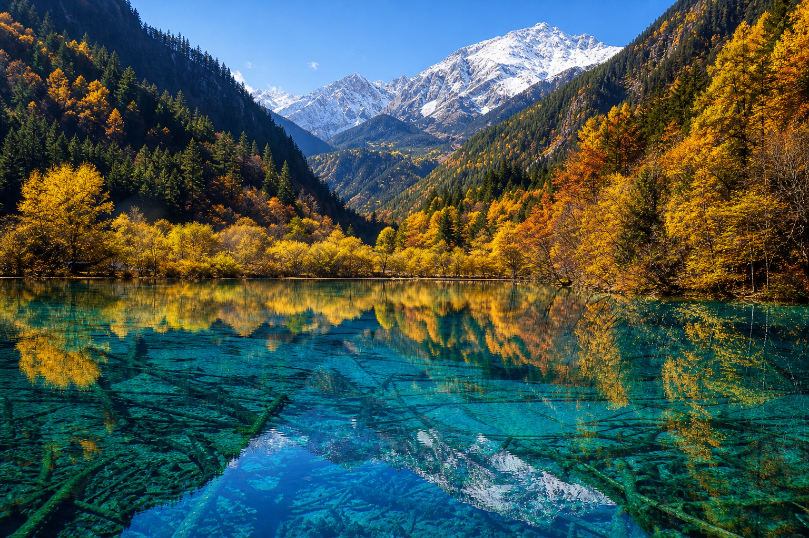
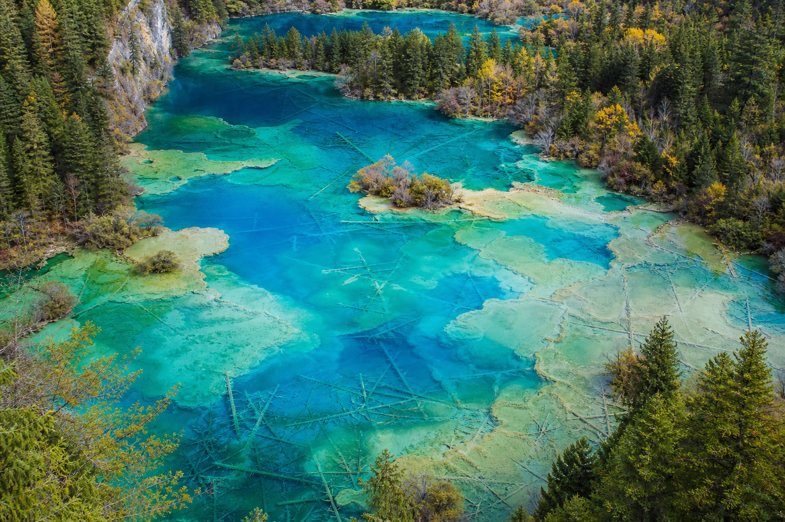
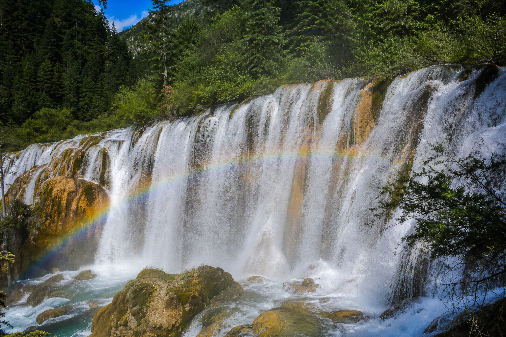

自然 · 地质 · 藏羌文化 · 整理日期：2026年06月

九寨沟位于四川阿坝藏族羌族自治州，因沟内有九个藏寨而得名，以「翠海、叠瀑、彩林、雪峰、藏情、蓝冰」著称，1992年列入《世界自然遗产名录》。多数游客记住的是照片里令人屏息的蓝绿色湖水，但真正读懂九寨沟，需要看见水面之下的地质演化、森林与湖泊的共生关系，以及藏羌民族在此繁衍生息的文化层。
九寨沟的「美」不是静态装饰，而是亿万年地质运动与千年生态平衡的结果。冰川刨蚀形成U形谷，钙华沉积筑成堤坝，湖水因此深浅不一、色相如谱；落叶与矿物质在水中共同作用，才呈现蓝、绿、青、翠的层次。2017年7.0级地震后，九寨沟经历修复与生态恢复，更提醒我们：奇迹之地同样脆弱，读懂它才懂得敬畏。
本文试图超越「打卡清单」，从形成原理、代表性景观、藏羌文化、保护启示四个维度，帮助读者建立对九寨沟更深一层的理解。

【冰川与U形谷】
第四纪冰川活动刨蚀山体，形成典型的U形谷，为湖泊与瀑布提供了地形骨架。高山冰雪融水汇入沟谷，水量丰沛而清澈，是九寨沟水景的物质基础。
【钙华堤坝 — 自然的筑坝师】
九寨沟众多海子（如五花海、长海、熊猫海）之间，由碳酸钙沉积形成的钙华堤坝缓慢抬升、连接、分割水体。这种「自然筑坝」历时千年，使湖泊呈阶梯状串联，瀑布因此层叠而生。钙华、藻类、矿物质与光线共同作用，才出现一池多色的奇观。
【森林—湖泊共生系统】
九寨沟处于寒温带森林带，针阔混交林为水源涵养提供保障。倒木沉入湖中，并未破坏景观，反而成为水下森林，与钙华、微生物共同构成独特的生态美学。美，在这里是系统运行的副产物，而非孤立存在的装饰。

【五花海 — 色彩的教科书】
五花海是九寨沟色彩最丰富的海子之一。同一湖面呈现蓝、绿、黄、褐等色块，源于水深差异、湖底沉积物、水生植物与阳光角度的综合作用。读懂五花海，就读懂了九寨沟「色相如谱」的科学逻辑。
【珍珠滩与诺日朗 — 叠瀑之美】
珍珠滩水流在钙华台地上奔涌，激起如珍珠般的水花；诺日朗瀑布宽达数百米，是中国最宽的钙华瀑布之一。叠瀑之美，本质是水与钙华地形长期博弈、协作的结果——水借地形而壮观，地形借水流而生长。
【长海 — 最高最大的海子】
长海位于海拔3100余米，四周雪山环抱，湖水深蓝宁静。它是九寨沟的「水源中枢」，以沉默的高处蓄水滋养下方一连串海子，像整个沟谷水系的心脏。
【树正群海 — 阶梯与藏寨】
树正群海由多个海子阶梯相连，旁边即是树正藏寨。自然景观与人文聚落比邻而居，是读懂「藏情」这一九寨沟六绝的关键入口——这里不仅是景区，更是世代居住的家园。
九寨沟一带藏族、羌族杂居。藏寨木楼、经幡、锅庄舞，与山林水色构成独特的人文景观。许多海子、瀑布的名字来自藏语或民间传说，如诺日朗（藏语意为「男神」）、五花海因秋季两岸彩林倒映而得名。
真正读懂九寨沟，不应只拍水面，也要理解：藏羌人民如何在与高寒山地共处的历史中，将自然神圣化、生活化。他们的迁徙、祭祀、生产方式，与沟谷生态彼此嵌入，而非简单「背景板」。
九寨沟的美，一半是地质的偶然，一半是人与自然长期共处的必然。—— 阅读札记
2017年8月8日，九寨沟发生7.0级地震，火花海、诺日朗瀑布等景观一度受损。此后经过自然恢复与科学修复，沟谷逐步重新开放。地震让我们意识到：钙华堤坝生长极慢，一旦破坏，恢复以十年、百年计。
作为游客，「读懂」也意味着负责任地旅行：不投食、不踩踏钙华、不离开栈道、不污染水体。九寨沟的容量有限，预约、限流不是障碍，而是让奇迹延续的必要措施。
九寨归来不看水。—— 民间俗语
九寨沟的湖，是光、水、钙华、生命共同写就的诗。—— 阅读札记
钙华堤坝每年仅生长约几毫米，却支撑起千年水景。—— 地质学常识
真正读懂一处风景，是从看热闹到看门道，再到看敬畏。—— 阅读札记
过去看九寨沟，记住的是「太美了」三个字；深入阅读之后，才开始看见美背后的机制——冰川、钙华、森林、藏寨，缺一不可。就像都江堰以「顺势而为」治水，九寨沟则以「顺势而为」让水在谷中停留、着色、成瀑、成海。两者一人工，一天然，却都体现中国人对水的深层理解。
2017年地震是一个沉痛的提醒：我们以为永恒不变的风景，其实也在变动之中。读懂九寨沟，最终读懂的是一种谦卑——在自然面前，人类是过客；在奇迹面前，最好的态度是欣赏而不掠夺，亲近而不伤害。
若有机会再访，我想少拍几张匆匆的照片，多留一点时间坐在海子边，看光在水面上移动，看沉木在湖底安静生长。那时，九寨沟不再只是「去过的地方」，而是一本打开的自然之书。